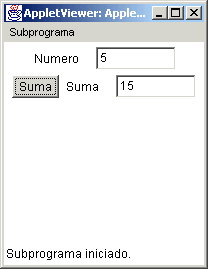
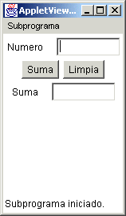
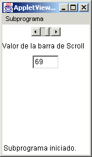
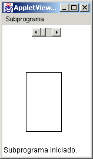
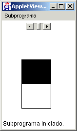
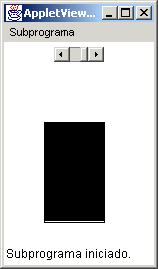
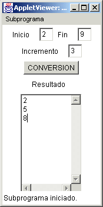
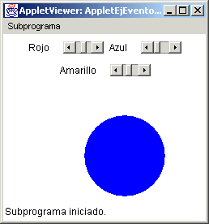

Módulo 2:
Estatutos de Control 
3. Uso de Eventos en un Applet.
Un evento se refiere a alguna acción que puede ser realizada por el usuario para que el applet realice alguna serie de instrucciones. Ente algunos eventos dentro de un applet tenemos:
-
oprimir en un botón específico
-
mover una barra de desplazamiento
-
oprimir una tecla específica
Cuando un applet esta ejecutandose, éste puede estar esperando que el usuario active alguna secuencia de instrucciones mediante la selección de algun elemento de interfaz gráfica definido para esto, como lo hemos hecho anteriormente con el objeto de la clase Button.
Cuando creamos un objeto de interfaz gráfica que nos servira para que el usuario indique alguna acción, es importante definirle a este objeto que será escuchado por la clase específica que se encarga de revisar si hay algún evento que ha sido realizado.
Eventos de Botón
Analicemos lo que se hace para manejar más de un evento, por ejemplo cuando hacemos uso de mas de un botón, usemos el applet utilizado anteriormente para dar la suma de todos los números desde el 1 hasta el N:

Supongamos que ahora queremos tener un botón que limpie los valores de los campos, para volver a dar nuevos valores.
El applet quedaría muy parecido al anterior hecho, solo que ahora en el método action Performed debemos revisar cual fue el botón que se seleccionó,y esto será a través de la instrucción de decisión IF, y el método getSource() que es tomado de la clase ActionEvent, que es el parámetro que nos pasa el método actionPerformed. Dentro de este parámetro es donde se guarda la información sobre cual es el elemento gráfico que fue seleccionado.
Es importante no olvidar que todos las clases para poder usar eventos se toman utilizando import java.awt.event.*;
El applet quedaría como el siguiente:
import java.awt.*;
import java.applet.*;
import java.awt.event.*;
// <applet width="150" height="200" code="AppletEventos1"></applet>
public class AppletEventos1 extends Applet implements ActionListener {
Label l1, l2;
TextField t1,t2;
Button b1,b2;
public AppletEventos1() {
l1 = new Label("Numero");
t1 = new TextField(8);
l2 = new Label("Suma");
t2 = new TextField(8);
b1 = new Button("Suma");
b2 = new Button("Limpia");
add(l1);
add(t1);
add(b1);
add(b2);
add(l2);
add(t2);
b1. addActionListener(this);
b2. addActionListener(this);
}
public void actionPerformed(ActionEvent ae) {
if (ae.getSource() == b1) {
int n = Integer.parseInt(t1.getText());
int suma = 0;
for (int i = 1; i<= n; i++) {
suma += i;
}
t2.setText("" + suma);
}
if (ae.getSource() == b2) {
t1.setText("");
t2.setText("");
}
}
}
La ejecución del applet quedaría como el siguiente:

Donde lo mas importante aquí es entender el uso del método getSource() y el objeto ae perteneciente a la clase ActionEvent, que es el que nos esta pasando el evento de que se trata, la instrucción
if (ae.getSource() == b1) {
Lo que revisa es si el evento que fue el tomado corresponde al objeto del boton b1, si esto es cierto, entonces se realizan las intrucciones dentro del if, de otra manera se salta a continuar con el siguiente if.
La misma acción la podemos realizar, pero utilizando el método getActionCommand, pero aqui el cambio sería tomar el String que aparece en el elemento del botón, no el nombre del objeto botón, la instrucción pudiera ser :
if (ae.getActionCommand() == "Suma")
Ambas maneras son utilizadas para revisar cual fue el botón seleccionado.
Eventos de Barra de Desplazamiento
En estos eventos hacemos uso de barras de desplazamiento para realizar alguna instrucción o grupo de instruciones, y para esto es importante tomar eventos de la clase Scrollbar. Los objetos de la clase Srollbar son escuchados a través de implementar una interfaz llamada AdjustmentListener, la cual utiliza el método adjustmentValueChanged(AjustmentEvent ae), un método muy parecido al actionPerformed, pero trabaja sobre diferentes elementos de interfaz gráfica.
Veamos un ejemplo:
import java.awt.*;
import java.applet.*;
import java.awt.event.*;
// <applet width="150" height="200" code="AppletEventos2"></applet>
public class AppletEventos2 extends Applet implements AdjustmentListener {
Label l;
Scrollbar s;
TextField t;
public AppletEventos2() {
l = new Label("Valor de la barra de Scroll");
t = new TextField(3);
s = new Scrollbar(Scrollbar.HORIZONTAL, 0, 1, 0, 100);
add(s);
add(l);
add(t);
s.addAdjustmentListener(this);
}
public void adjustmentValueChanged(AdjustmentEvent ae) {
int valor = s.getValue();
t.setText(""+valor);
}
}
Dicho applet muestra una barra de scroll que al ser deslizada muestra un valor en el campo texto,como aparece en seguida:

Esto se hace a través del uso del constructor Scrollbar(), el cual tiene una serie de parámetros para definir la posición de la barra, el valor de los números a representar, etc.
Otro ejemplo que puede ilustrar mejor el uso de una barra deslizadora es el siguiente:
import java.awt.*;
import java.applet.*;
import java.awt.event.*;
// <applet width="150" height="200" code="AppletEventos3"></applet>
public class AppletEventos3 extends Applet implements AdjustmentListener {
Scrollbar s;
int barra = 0;
public AppletEventos3() {
s = new Scrollbar(Scrollbar.HORIZONTAL, 0, 1, 0, 100);
add(s);
s.addAdjustmentListener(this);
}
public void paint(Graphics g) {
g.drawRect(40, 80, 60, 100);
g.fillRect(40, 80, 60, barra);
}
public void adjustmentValueChanged(AdjustmentEvent ae) {
barra = s.getValue();
repaint();
}
}
En este ejemplo al mover la barra deslizadora se ve como va cambiando el llenado del rectángulo :



En el caso de este applet recurrimos a utilizar el método paint() para que se redibuje cada vez que se mueve la barra deslizadora, utilizando el metodo fillRect() rellenamos la parte del rectángulo. Es importante hacer notar que la variable barra se definio al inicio de la clase, para que cualquier método la pueda utilizar sin problemas.
1. Crea un applet que tenga tres campos texto, un campo de área y dos botones con los letreros "Hacia Arriba" y "LIMPIA". Al oprimir el botón "Hacia Arriba" añadirá números en el campo de área por línea, empezando por el número del primer campo, terminando por el número del segundo campo y con un incremento del número del tercer campo. El botón "Limpia" limpiará todos los campos, como se muestra en la figura:

2. Crea un applet que tenga tres barras deslizadoras y que cada una corresponda al color primario utilizado para crear cualquier color en la computadora RGB (Red, Green, Blue), haz que el applet cambie el color de un círculo del tamaño que tu desees al mover las barras deslizadoras, revisa el método setColor() de la clase Color para entender como cambiarás el color al círculo dibujado, como se muestra en la figura:

http://java.sun.com/docs/books/tutorial/uiswing/events/actionlistener.html